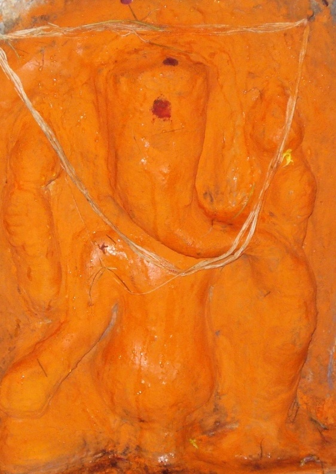

<?xml version="1.0" encoding="UTF-8"?><rss version="2.0"
	xmlns:content="http://purl.org/rss/1.0/modules/content/"
	xmlns:wfw="http://wellformedweb.org/CommentAPI/"
	xmlns:dc="http://purl.org/dc/elements/1.1/"
	xmlns:atom="http://www.w3.org/2005/Atom"
	xmlns:sy="http://purl.org/rss/1.0/modules/syndication/"
	xmlns:slash="http://purl.org/rss/1.0/modules/slash/"
	>

<channel>
	<title>Singh Tund Vinayak &#8211; Varanasi Temples</title>
	<atom:link href="index.html" rel="self" type="application/rss+xml" />
	<link>../../../../index.html</link>
	<description>Temples of Varanasi as referred to in Kashi Khand</description>
	<lastBuildDate>Thu, 19 Jun 2025 05:16:46 +0000</lastBuildDate>
	<language>en-US</language>
	<sy:updatePeriod>hourly</sy:updatePeriod>
	<sy:updateFrequency>1</sy:updateFrequency>
	<generator>https://wordpress.org/?v=4.6.29</generator>
	<item>
		<title>SINGH TUND VINAYAK</title>
		<link>../../../../vinayak-temples/singh-tund-vinayak/index.html</link>
		<pubDate>Fri, 07 May 2010 16:36:40 +0000</pubDate>
		<dc:creator><![CDATA[admin]]></dc:creator>
				<category><![CDATA[Singh Tund Vinayak]]></category>
		<category><![CDATA[Vinayak Temples]]></category>
		<category><![CDATA[simha tunda]]></category>
		<category><![CDATA[tund]]></category>

		<guid isPermaLink="false">../../../../p=99.html</guid>
		<description><![CDATA[(SINGH TUND VINAYAK) Singh Tund Vinayak is located at D-33/66, Khalispura, near Dasaswamedh. Sincere prayers offered to this Vinayak will absolve one of all sorts of sins knowingly or unknowingly committed. TYPES OF POOJA The place of worship is open practically throughout and devotees can perform pooja by themselves.]]></description>
				<content:encoded><![CDATA[<p style="text-align: left;"></p>
<p style="text-align: center;"><strong>(SINGH TUND VINAYAK)</strong></p>
<p style="text-align: left;">Singh Tund Vinayak is located at D-33/66, Khalispura, near Dasaswamedh. Sincere prayers offered to this Vinayak will absolve one of all sorts of sins knowingly or unknowingly committed.</p>
<h3>TYPES OF POOJA</h3>
<p>The place of worship is open practically throughout and devotees can perform pooja by themselves.</p>
]]></content:encoded>
			</item>
	</channel>
</rss>
